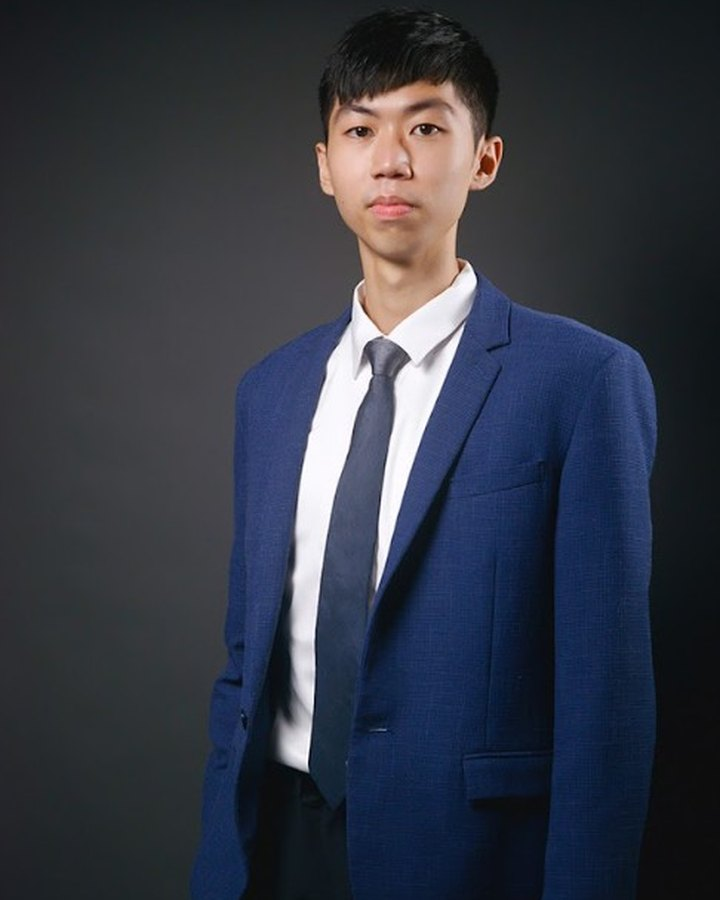
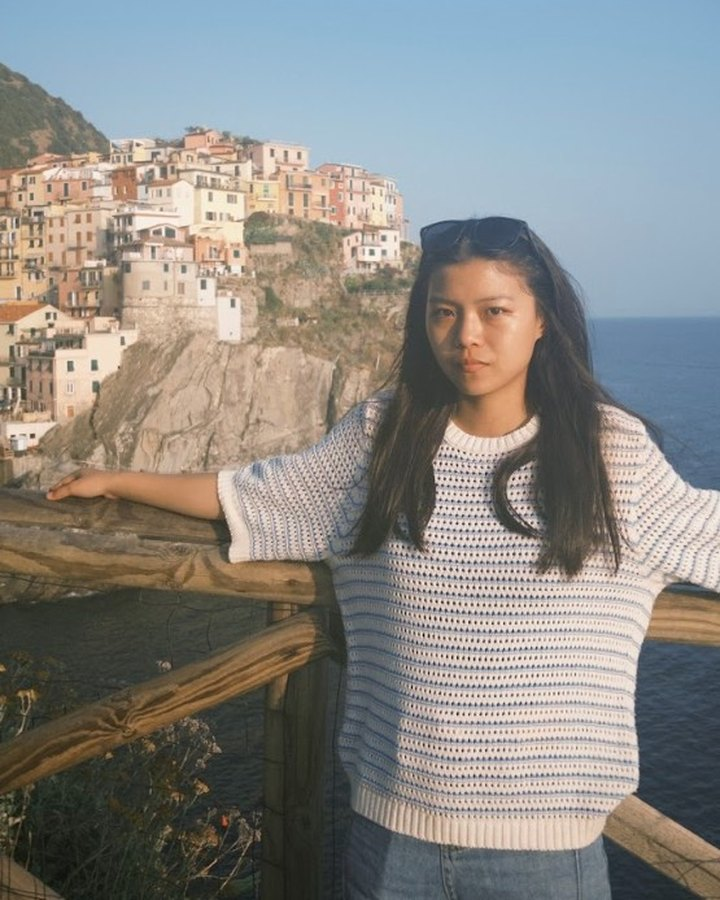
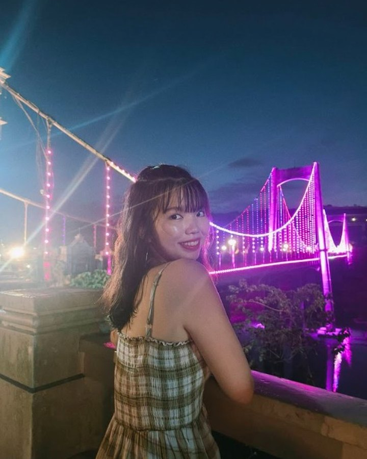

謝青杉 Sam
國立中山大學｜國際經營管理碩士二年級
Explorer · Storyteller · Connector有些旅行，從抵達開始。
有些旅行，從移動本身開始。
當鐵道接住遠方，旅程開始有了節奏。
當自行車貼近土地，風景不再只是路過。
當一張餐桌打開地方，味道就成了記憶。
於是，台灣不再只是目的地，
而是一段值得被騎過、吃過、記住的旅程。
Rail × Bike × Food Culture Soft Adventure
美食讓人想來，不是苦騎。不是爬山。是一段 Rail-supported soft adventure，讓北美旅客第一次來台灣就有最高密度的完成感。

夜市文化、茶席、地方餐桌、Gonna+ 體驗。
餐桌先打開慾望——旅程才真的開始。

每天 15–40km 精華短騎，不是競賽是感受。
用身體記住海岸、縱谷、小鎮與人情的溫度。

鐵道是骨架，不是替代。遇到雨天、體力變數、
長距離，Rail Mode 無縫啟動，旅程不中斷。

e-bike 選項、保母車隨行、體能分級評估。
不管騎齡幾年，都可以完成一座島嶼。

🍜 Taste Anchor：Gonna+ 歡迎晚宴
精選台北餐廳、行程說明、城市漫步初探。珍珠奶茶文化體驗。
🧅 Taste Anchor：蔥餅 × 海味小餐桌
蘭陽平原輕騎 + Rail，頭城或礁溪溫泉散策，在地農特小吃。
🌿 Taste Anchor：原民風味 × 石板料理
七星潭 / 海岸短騎 + Rail，野菜體驗與阿美族文化感應。

🍚 Taste Anchor：池上米食 × 米鄉故事
伯朗大道 / 關山環鎮，縱谷精華騎行，收集 Ride Passport 印章。
🦞 Taste Anchor：海鮮直送 × 海景咖啡
海岸精華段 + Rail，杉原海岸、加路蘭步道與原民風味夜市。
🍷 Taste Anchor：港都風味 × 正宗台菜
南迴線 Rail 轉場至左營，駁二藝術特區與愛河夜景。
🍺 Taste Anchor：Farewell 主廚餐桌 × 在地精釀
愛河 / 港區輕騎 + Rail，哈瑪星收束，啟動旅後 CRM。
☕ Taste Anchor：旅程結尾的完美早餐
高鐵返回台北。可自由延伸澎湖、台南、東南亞行程。Ride Passport 完整蓋章，你完成了這座島嶼。
北迴線穿越山與海，車窗是這段旅程最震撼的第一幕。台灣的美，不需要解說。
伯朗大道的稻田、七星潭的礫石灘、台東的太平洋。騎過的路，比任何照片都真實。
滷肉飯、蚵仔煎、原民石板料理、池上便當、在地精釀。每一餐都是地理課。
從台北到高雄，用鐵道串起，用單車感受，用餐桌記住。這座島嶼，你真的完成了。
我們管理風險，不是移除風險。每一層設計，都是為了讓北美旅客安心體驗台灣。
每天只騎 15–40km，精心設計的短距離路線。不是苦騎競賽，而是剛剛好的感受節奏。
全程提供電動輔助車選項。騎齡不限、體能不設門檻，每個人都可以完成這座島嶼。
保母車如影隨形，隨團技師候命。冰水補給、備用腳踏車、急救設備，全程零缺口陪伴。
任何時刻感覺體力不支，即刻啟動 Rail Mode，無縫銜接鐵道接駁，旅程不中斷、行程不打折。
遇天候不佳，最高規格備案立即啟動。鐵道接駁、室內文化體驗、在地餐桌，雨天依然精彩。
出發前體能評估，在地醫療即時連線，緊急轉送與高額旅遊保險全方位覆蓋。食材溯源、過敏管理也一手包辦。
每個方案都包含鐵道接駁、安全系統與在地食文化。選擇你的深度。
* 以上為 2026 提案階段價格，最終定價依實際成本調整。Founder Group 會員享有早鳥優惠。
這趟旅程為你設計。不需要是單車高手，不需要懂中文，只需要好奇心。
你被台灣美食吸引，想要超越夜市的深度體驗——私廚餐桌、茶文化、原民料理。旅行是你認識世界的方式。
你熱愛戶外，但不想要苦行。你要的是有風景、有故事、有支援的冒險——而不是挑戰極限的痛苦。
你的俱樂部在找一個有意義的年度旅行目標。環台島嶼、完成感、Ride Passport——這正是你們需要的故事。
你的公司重視可持續旅遊、文化體驗與團建。低碳旅行 + 在地食文化 + 完整後勤——符合 ESG 承諾。
2026 年首發出團，Founder Group 名額有限。
立即登記，鎖定早鳥優惠與行程優先選擇權。
For Evaluators & Decision Makers
以下內容從市場數據、競品分析、北美雄獅能力、商業模式到上市路線圖，完整呈現這個提案的決策邏輯。
北美人先被美食吸引，再用騎旅完成台灣。短距離內切換山海與城鄉，在 8 天內形成可分享的完成感。
82.17% 受訪北美旅客將「美食」列為造訪台灣的首要原因。餐桌先打開慾望，再由騎行留下記憶。
69.66% 重視風景。海岸、縱谷、山城與小鎮距離極近，在 8 天內形成無冷場的完整節奏。
47.20% 在意人民友善。治安、便利與鐵道備援，大幅降低北美旅客首次來台與騎旅的心理阻力。
短騎剛剛好、鐵道接駁無縫銜接、e-bike 支援。不苦騎也能擁有最高純度的冒險體驗。
北美旅客以「美食」為來台首要原因
以「自然風景」列為來台動機
全球冒險旅遊市場規模（美元）
冒險旅遊市場年增率（CAGR）
美國人未來 12 個月國際旅遊意願
計畫半年內完成國際旅遊的北美旅客
後疫情時代，旅客從「打卡多點」轉向「深度少點」。Soft adventure 成為高消費族群首選。
美食旅遊佔整體旅遊支出逐年攀升。台灣食文化密度極高，是北美市場的差異化入口。
Netflix、美食媒體與地緣政治關注帶來台灣知名度爆升。窗口期正在開啟，競爭者尚未成形。
82% 北美旅客因美食而想來台灣。食文化是購買決策入口，不是附加價值。把「吃台灣」放在產品核心，而非配套。
用身體移動過的地方，才會真正記住。每天 15–40km 的短騎是可交付的冒險，不是苦行，是記憶製造機。
鐵道不是替代方案，而是讓騎旅成為可銷售商品的關鍵基礎設施。管理風險，不是移除風險。
Ride Passport 與 Travel Credit 30/60/90 天分眾，把一次台灣旅程變成北美雄獅與客戶的長期關係。
沒有競品做到我們做的這件事：把食文化、軟性騎旅與鐵道接駁整合為一個北美可銷售的套裝產品。
| 品牌 / 競品 | 定位 | 台灣鐵道整合 | 食文化深度 | e-Bike 配備 | 英語服務 | 北美通路 |
|---|---|---|---|---|---|---|
| 🦁 Lion Ride & Taste 2.0 | Food × Bike × Rail Soft Adventure | ✦ 核心架構 | ✦ 主軸策略 | ✦ 標配 | ✦ 全英服務 | ✦ 北美辦公室 |
| Giant Cycling Adventures | 單車旅遊為主 | ○ 部分整合 | ✗ 食文化薄弱 | ✦ 有 | ○ 有限英語 | ✗ 無北美布點 |
| SpiceRoads | 亞洲自行車旅遊 | ✗ 無鐵道整合 | ○ 基本在地食 | ○ 選配 | ✦ 英語為主 | ✗ 無北美通路 |
| Backroads | Premium 軟性冒險 | ✗ 無台灣產品 | ○ 美食配套 | ✦ 有 | ✦ 英語 | ✦ 強北美基礎 |
| G Adventures | 背包冒險旅遊 | ✗ 無 | ○ 基本 | ✗ 無 | ✦ 英語 | ✦ 北美強 |
| 在地 DMC | 客製行程 | ○ 個別接洽 | ✦ 深度在地 | ○ 不一致 | ✗ 中文為主 | ✗ 無北美通路 |
* 競品資料為公開資訊整理，截至 2026 Q1。
四個理由，說明為什麼這個產品由北美雄獅來做，不是巧合，而是必然。
洛杉磯辦公室直接觸達北美中文旅客社群。不需要依賴第三方代理，直銷能力是護城河。北美華人旅客年消費力超過 1,200 億美元。
欣單車社群 2012 年成立，兩鐵旅遊 2020 年試行成功，兩鐵列車 2022 年上線驗證。我們不是從零開始——Rail × Bike 架構已被市場驗證。
雄獅在台灣企業包團市場有成熟 B2B 服務能力。北美科技公司 ESG 預算快速增長，我們能用既有服務流程承接企業包團，加速商業模式驗證。
雄獅在台灣是最大旅行社品牌。這個背景讓我們能優先取得台鐵優先掛載、優質餐廳合作與政府旅遊推廣資源，形成競品難以複製的在地優勢。
雄獅不是從零開始。單車社群、鐵道經驗、服務設計與 B2B ESG 信號，都是 2.0 的基礎。
我們管理風險，不是移除風險；把高風險騎旅改造成可安心交付的體驗型產品系統。
每段路線精準分級，距離極致考究，預留充裕的品味與探索時光。
最高規格的隨扈陣容。保母車如影隨形，隨團技師候命，冰水補給與備用車無縫接軌。
最高級的從容，來自完美備案。遇天候不佳即刻啟動「Rail Mode」，無縫切換頂級鐵道接駁。
出發前確認健康狀況，依體能配置 e-bike 或助力模式，人人皆可完成。
在地醫療即時連線，緊急轉送與高額保險全方位覆蓋，安心上路。
嚴選口碑餐廳；食材溯源、過敏管理與特殊飲食需求，在餐桌展現極致細節與用心。
不搶所有人，先鎖定三個可精準觸達的北美市場入口，從社群到轉化。
與北美台灣美食 KOL、Yelp Elite、食旅 YouTuber 合作。用美食故事先打開台灣知名度，再轉化為行程諮詢。
洛杉磯、舊金山、紐約、多倫多自行車俱樂部。Strava、Zwift 社群導流，以「台灣 Ride」作為年度挑戰目標。
北美科技公司、金融業 HR 部門。低碳旅遊 + 文化深度 + 完整後勤，符合企業 ESG 旅遊承諾與員工激勵需求。
Ride Passport 與 Travel Credit 把一次旅程延伸成長期客戶關係。Before / During / After / Next Trip。
出發前 30 天，旅客收到台灣食文化電子報、騎乘準備指南、語言包、行前 Q&A。期待感從報名當天就開始累積。
Ride Passport 每日蓋章，即時 IG 內容素材，餐廳 QR 故事卡，在地推薦手帳。旅途本身就是可分享的內容。
旅後 7 天照片精修回寄，旅後 30 天 Travel Credit 啟動（USD 300）。旅後 60 天推送進階行程，90 天收集評分與口碑分享。
日月潭 / 阿里山深度版，台南美食專題，東南亞延伸。Travel Credit 折抵，讓「台灣第一次」成為長期關係的開始。
三層收入模型，從大眾到企業，從單次到回訪，建立可疊加的商業飛輪。
入門軟性冒險市場，覆蓋最大客群基礎，作為品牌認知與口碑累積的核心層。
高端食旅市場，升級住宿、私廚與深度食文化體驗。是利潤率最高、回訪率最高的主力層。
B2B 企業市場，現金流穩定、規模效應強，是加速盈虧平衡的關鍵策略層。
我們識別了五個主要風險，並為每一個設計了具體的緩解策略。
三年從試行到擴展，用每一次出團優化產品，建立可規模化的北美入境旅遊模型。
Founder Group 首發 2 團（Spring + Fall），企業包團 1–2 案驗證，建立餐廳白名單與 Ride Passport 系統，蒐集口碑與 NPS。
增加 4–6 出發團期，導入 Signature Tier 私廚升級版，擴大北美城市通路（LA / SF / NYC / Toronto），啟動 Strava / Zwift 社群合作。
全年常態出團，導入澎湖 / 台南延伸版，建立 Ride Passport 數位化平台，探索日韓版「Rail × Bike × Food」擴展可行性。
Team Tokyo｜不好意獅

國立中山大學｜國際經營管理碩士二年級
Explorer · Storyteller · Connector國立政治大學｜企業管理學系
體驗設計 · 活動企劃 · 商務拓展與專案推進
國立台北大學｜公共行政暨政策學系｜已畢業
活動規劃 · 解決問題 · 臨機問題處理University of New South Wales｜MBA｜已畢業
Business Strategy · B2C / B2B Sales國立臺灣師範大學｜國際人力資源管理學系
Leadership · Cultural Exchange · Communication
輔仁大學｜日本語文學系
平面設計 · 語言能力 · 日本文化與旅遊觀察
國立臺灣大學｜外國語文學系｜五年級
翻譯 · 商務開發 · 國際交流
國立台灣師範大學｜幼兒與家庭科學學系
課程設計 · 活動企劃 · 跨文化溝通與團隊領導